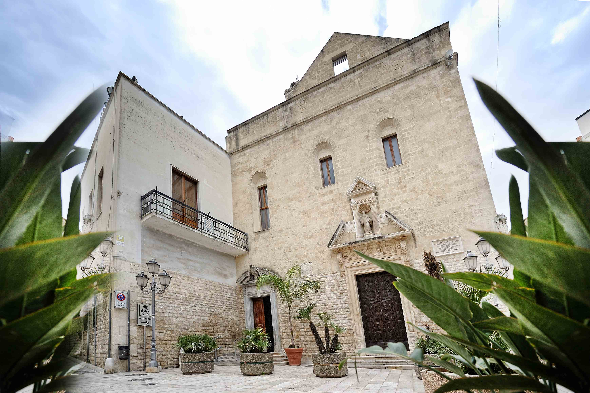

Chiesa Madre di Santa Maria della Croce
La Chiesa Madre di Santa Maria della Croce è uno dei monumenti più importanti di Modugno e rappresenta un esempio magnifico dell'architettura romanica pugliese.
Costruita tra il XIII e il XIV secolo, questa chiesa si distingue per la sua facciata imponente e i suoi interni ricchi di opere d'arte.
Nel corso del tempo ha subito diverse modifiche, con l'aggiunta di elementi barocchi che ne hanno arricchito l'aspetto.Al suo interno, si possono ammirare pregevoli altari, sculture e dipinti, che la rendono un luogo di grande valore storico e artistico per la città.

Torre dell'Orologio
La Torre dell'Orologio, situata in Piazza del Popolo, è uno dei simboli più riconoscibili di Modugno. Eretto nel XIX secolo, questo monumento ha la funzione di torre civica e rappresenta un punto di riferimento per i cittadini. Con il suo orologio meccanico ancora in funzione, la torre scandisce il tempo della vita cittadina ed è un elemento centrale nelle tradizioni locali. La sua posizione nel cuore della città, accanto a edifici storici e strade caratteristiche, la rende una tappa obbligata per chi visita Modugno.
Chiesa Matrice
La Chiesa Matrice di Santa Maria Santissima Annunziata è il principale luogo di culto di Modugno, in Puglia. Costruita tra l'XI e il XII secolo in stile romanico-pugliese, ha subito modifiche che hanno aggiunto elementi barocchi e neoclassici. La chiesa ha una maestosa facciata in pietra con un grande rosone e un imponente campanile. All'interno, ha tre navate con cappelle laterali e conserva opere d'arte di rilievo, tra cui una tela della Madonna Annunziata. Fulcro della vita religiosa della città, la chiesa è teatro di celebrazioni e feste legate alla tradizione cristiana locale.
© 2024 - Tutti i diritti riservati. Comune di Modugno